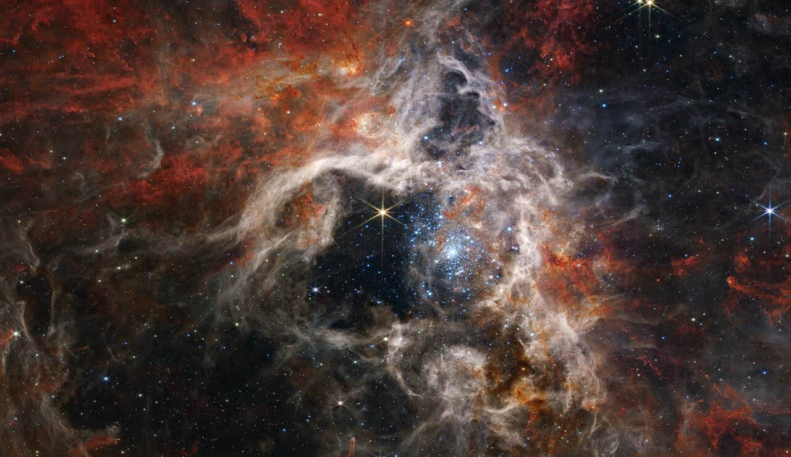

30/09/2015 - SERVICIOS DE SOPORTE DE LEOP ARSAT-2
Brindamos soporte durante la campaña de lanzamiento del satelite ARSAT-2 de la empresa Argentina ARSAT S.A.
Utilizando equipamiento propio fuimos estación de respaldo durante el lanzamiento y la puesta en orbita geoestacionaria del satelite.
10/10/2022 - SERVICIOS DE INTERNET
Seguimos colaborando con el tendido de FO para lograr llegar a todos los rincones del país y ofrecer nuestros servicios.
Hasta la fecha logramos interconectar todas las provincias del país en los puntos mas importantes
Para 2024 estimamos tener más de 10.000 localidades conectadas a la red.
EXPLORACIONES DE ESPACIO PROFUNDO

Colaboramos con la red de investigaciones de espacio profundo (DSN).
En el último año colaboramos con la red de espacio profundo, ayudando con la recolección de datos.
Brindamos nuestro apoyo a la estaciones de Madrid (ES), Camberra (AU) y Goldstone (EUA) para las investigaciones.
 SERVICIOS DE SOPORTE DE LEOP (FASE DE LANZAMIENTO Y ORBITA TEMPRANA)
SERVICIOS DE SOPORTE DE LEOP (FASE DE LANZAMIENTO Y ORBITA TEMPRANA)
 EXPLORACIONES DE ESPACIO PROFUNDO
EXPLORACIONES DE ESPACIO PROFUNDO
 SERVICIOS DE INTERNET
SERVICIOS DE INTERNET